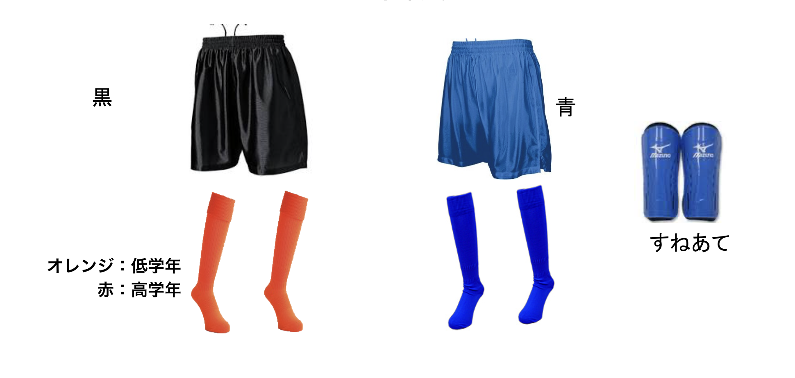

☆ 入部届け
入部届けはこちらのボタンからフォームを送信してください。
☆ 練習日について
週４回
通常練習
| 練習日 | 時間 | 場所 |
|---|---|---|
| 月・水・金 | 午後4:30〜午後6:30 | 安謝小ｸﾞﾗｳﾝﾄﾞ |
| 日曜 or 土曜 | 午前9:00〜午後5:00 |
- 第3日曜は無し
- ※日没の時間が早くなる季節（冬時間：午後6時頃）
- ※ 土曜日・日曜日は、練習試合や大会を行うことがほとんどです。
前日までに連絡がない場合は、念のために各学年世話役へ確認下さい。 - ※ 月曜日は隔週になります。
☆ ユニフォームについて
①練習時の服装
- 上着 ⇒ 指定なし （動きやすい服装）
- ズボン ⇒ 指定なし （動きやすい服装）
- ソックス ⇒ 指定なし （サッカー用ソックス）
- すねあて（ｼﾝｶﾞｰﾄﾞ） ⇒ 指定なし （ソックスの内側に使用）
- シューズ ⇒ 指定なし （運動靴でも可）
②練習試合・大会
- 上着 ⇒ チームユニフォーム着用（高 正→赤、副→白）（低 正→橙、副→緑）
- 上着 ⇒ 集合時→チームTシャツ （持っていない人は青色のTシャツ）
- ズボン ⇒ 全学年：黒、青パンツ （メーカー指定なし）
- ソックス ⇒ 全学年：青
高学年（4年以上）：赤、低学年（1〜3年）：オレンジ - すねあて（ｼﾝｶﾞｰﾄﾞ） ⇒ 指定なし （ソックスの内側に使用）
- シューズ ⇒ サッカー用スパイクが望ましい
※ ↓ 各自で揃えるようお願いします。

【大会用】
- シャツは、チームより大会時にその都度お貸しします。使用後は洗濯、次の練習日にご返却下さい。
- パンツ・ソックスは個人で購入して下さい。（詳細は各学年世話役へ確認か別紙をご覧ください）
- 2種類のパンツ・ソックスは公式戦時には、必ず持参下さい
【練習試合用】
- シャツは、チームＴシャツを着用。（持っていない選手は、青色のシャツにする）
- パンツ・ソックスも同じく青色を着用。
☆ 備品について
練習試合・大会に使用する備品（ボール・キーパー・救急箱・ビブス・テーブル・ベンチ etc…）は高学年→6年生、低学年→4年生で管理をしています。キーパーやビブスなど使用後は、洗ってから返却して下さい。
☆ 審判・運営などのご協力依頼
練習試合・大会時に、お父さん方男性の力を借りる準備等がありますので、お子様の応援をされながらご協力いただけたらと思います。